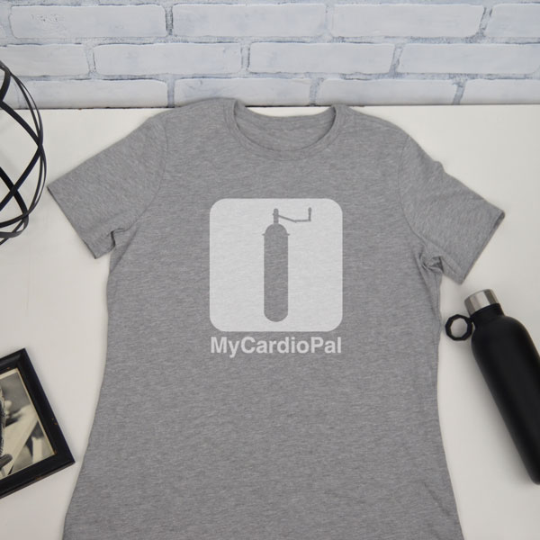
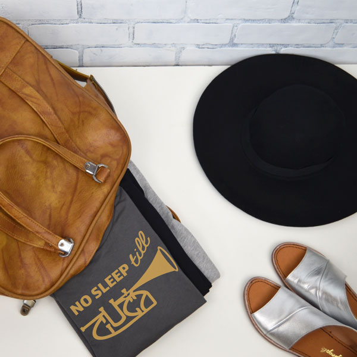

Culture
+
Humor
+
Humor

Tradition
with
a modern twist
with
a modern twist
Because it's good for your heart & soul.
GoneBalkan is a place where people, like us, can find a true connection with their roots. It's not our parents' Balkans... and it's hard to explain to our kids. We embrace the best bits of the Balkans and bring it to the rest of the world.
Learn More Shop